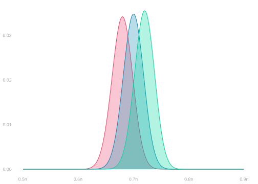

9 Sampling with Replacement and the Binomial Distribution
$$ \newcommand{X}{} \newcommand{Y}{}
$$
Sampling with Replacement
To calibrate our intervals, we need to understand the sampling distribution of our estimator. That means doing some probability calculations. The machinery isn’t complicated—we’ll count equally likely configurations and add up probabilities—but it gets notationally heavy when we apply it to the polling problem. So let’s warm up on something simpler first.
You’ve done this already, near enough. In the first homework you took six die sides, added a column for whether each was 3 or more—free, because the roll determines it—and added up the rows that agreed. What follows isn’t quite that. It’s a version of it, with people instead of sides and their answers instead of an indicator.
Finding the Distribution of \(Y_1\) in a Small Population
Let’s start with the distribution of \(Y_1\), the response to one call, when we sample with replacement. And to keep things concrete, let’s suppose we’re polling a population of size \(m=4\). We’re rolling a 4-sided die.
The Population
| \(j\) | name | \(y_j\) |
|---|---|---|
| \(1\) | Rush | \(0\) |
| \(2\) | Mitt | \(0\) |
| \(3\) | Al | \(1\) |
| \(4\) | Newt | \(1\) |
The Joint
| \(p\) | \(J_1\) | \(Y_1\) |
|---|---|---|
| \(\color{#EF476F}\frac14\) | \(1\) | \(\color{#EF476F}0\) |
| \(\color{#EF476F}\frac14\) | \(2\) | \(\color{#EF476F}0\) |
| \(\color{\) | \(3\) | \(\color{\) |
| \(\color{\) | \(4\) | \(\color{\) |
The Marginal
| \(p\) | \(Y_1\) |
|---|---|
| \(\color{#EF476F}\frac24\) | \(\color{#EF476F}0\) |
| \(\color{\) | \(\color{\) |
We have two Nos (0s) and two Yeses (1s). The ‘Yes’ frequency in the population is \(\theta_1 = 2/4\). Here’s how we find the distribution of \(Y_1\).
We write the probability distribution of our die roll in a table. It has two columns: one for the roll \(J_1\) and another for its probability \(p\). It has \(m=4\) rows, one for each possible outcome of the roll. Each roll is equally likely, so the probability in each row is \(1/4\).
We add a column for the response to our call, \(Y_1\). Adding this column is ‘free’—it doesn’t change the row’s probability—because what we hear is determined by the roll. E.g. if we roll a 1, we’re going to hear Rush say ‘No’. So the probability we roll a 1 and hear a ‘No’ is the same as the probability we roll a 1.
We marginalize over rolls to find the distribution of our call’s outcome. We can color each row according to the call’s outcome \(Y_1\), then sum the probabilities in each color. The probability of hearing ‘No’ is the probability that we roll a 1 or 2: \(1/4+1/4 = 2/4\). The probability of hearing ‘Yes’ is the probability that we roll a 3 or 4: \(2/4\). These probabilities match the frequencies of ‘Yes’ and ‘No’ in our population.
Index Sets and Summands
A sum has two parts. There’s the set of things you walk over, and there’s what you write down for each one.
\[ \sum_{j \,\in\, 1 \ldots 4} \frac{1}{4} \qquad\longrightarrow\qquad \sum_{j \,\in\, \{\,j \,:\, y_j = 0\,\}} \frac{1}{4} \]
Both have the same summand, \(1/4\). What changed is the index set: on the left it’s everybody, \(1 \ldots 4\); on the right it’s the ones who said No, which here is \(\{1, 2\}\).1
So the right-hand sum is \(1/4 + 1/4\), and the marginal we just wrote down is that sum.
The size of an index set is worth a name of its own, because we’ll be counting them from here on.
\[ m_y = \sum_{j \,\in\, \{\,j \,:\, y_j = y\,\}} 1 \]
That’s the number of voters who’d say \(y\). Here \(m_0 = 2\) and \(m_1 = 2\), and \(m_0 + m_1 = m = 4\).
Generalizing to Larger Populations
Nothing we just did used the fact that there were four voters. So let’s do it again without a number in it, for a binary population \(y_1 \ldots y_m\) of any size \(m\). To ground us while we do it, we’ll think about our population of \(m=7.23M\) registered voters in Georgia. But we’ll handle the general case. Plugging in 7.23M ones and zeros wouldn’t exactly make things easier.
Finding the Distribution of \(Y_1\) in a Large Population
The Population
| \(j\) | \(y_j\) |
|---|---|
| \(1\) | 1 |
| \(2\) | 1 |
| \(3\) | 1 |
| \(4\) | 0 |
| ⋮ | ⋮ |
| \(m\) | 1 |
The Joint
| \(p\) | \(J_1\) | \(Y_1\) |
|---|---|---|
| \(1/m\) | \(1\) | \(1\) |
| \(1/m\) | \(2\) | \(1\) |
| \(1/m\) | \(3\) | \(1\) |
| \(1/m\) | \(4\) | \(0\) |
| ⋮ | ⋮ | ⋮ |
| \(1/m\) | \(m\) | \(1\) |
The Marginal
| \(p\) | \(Y_1\) |
|---|---|
| \(\underset{\color{gray}\approx 0.30}{\sum\limits_{j:y_j=0} \frac{1}{m}}\) | \(0\) |
| \(\underset{\color{gray}\approx 0.70}{\sum\limits_{j:y_j=1} \frac{1}{m}}\) | \(1\) |
We start by writing the probability distribution of our dice rolls. The person we call, \(J_1\), is equally likely to be anyone in the population of \(m \approx 7.23M\) people. It takes on each value \(1 \ldots m\) with probability \(1/m\).
We add a column for the response to our call, \(Y_1\). This is ‘for free’. The roll determines what we hear, so the probabilities don’t change. Still \(1/m\).
And we marginalize to find the distribution of \(Y_1\). We sum the probabilities in rows where \(Y_1=0\) and \(Y_1=1\). What we saw in our small population does generalize. The probability of hearing a response \(y \in \{0,1\}\) is the frequency of that response in the population. We’ll call these frequencies \(\theta_0\) and \(\theta_1\). This is a little redundant because \(\theta_0 = 1 - \theta_1\). Our estimation target is just the ‘Yes’ frequency \(\theta_1\). Some people call it the success rate.
To find the distribution of a sum of \(Y_1+Y_2\), we can follow the same steps. There’s a bit more to it, so we’ll break down the marginalization step to make it a little more tractable.
Two Calls to A Small Population
| \(j\) | name | \(y_j\) |
|---|---|---|
| \(1\) | Rush | \(0\) |
| \(2\) | Mitt | \(0\) |
| \(3\) | Al | \(1\) |
| \(4\) | Newt | \(1\) |
Two calls now. We make a table for the joint distribution of two rolls, add the response columns for free as before, and marginalize twice — once to get the responses, once to get their sum.
There are \(4 \times 4 = 16\) equally likely pairs of rolls, each with probability \(1/16\). Few enough to write down, so let’s write them all down. The response columns come along for free, same as before, and so does their sum.
The Joint
| \(p\) | \(J_1\) | \(J_2\) | \(Y_1\) | \(Y_2\) | \(Y_1 + Y_2\) |
|---|---|---|---|---|---|
| \(\color{#EF476F}\frac{1}{16}\) | \(1\) | \(1\) | \(0\) | \(0\) | \(0\) |
| \(\color{#EF476F}\frac{1}{16}\) | \(1\) | \(2\) | \(0\) | \(0\) | \(0\) |
| \(\color{#EF476F}\frac{1}{16}\) | \(2\) | \(1\) | \(0\) | \(0\) | \(0\) |
| \(\color{#EF476F}\frac{1}{16}\) | \(2\) | \(2\) | \(0\) | \(0\) | \(0\) |
| \(\color{\) | \(1\) | \(3\) | \(0\) | \(1\) | \(1\) |
| \(\color{\) | \(1\) | \(4\) | \(0\) | \(1\) | \(1\) |
| \(\color{\) | \(2\) | \(3\) | \(0\) | \(1\) | \(1\) |
| \(\color{\) | \(2\) | \(4\) | \(0\) | \(1\) | \(1\) |
| \(\color{\) | \(3\) | \(1\) | \(1\) | \(0\) | \(1\) |
| \(\color{\) | \(3\) | \(2\) | \(1\) | \(0\) | \(1\) |
| \(\color{\) | \(4\) | \(1\) | \(1\) | \(0\) | \(1\) |
| \(\color{\) | \(4\) | \(2\) | \(1\) | \(0\) | \(1\) |
| \(\color{\) | \(3\) | \(3\) | \(1\) | \(1\) | \(2\) |
| \(\color{\) | \(3\) | \(4\) | \(1\) | \(1\) | \(2\) |
| \(\color{\) | \(4\) | \(3\) | \(1\) | \(1\) | \(2\) |
| \(\color{\) | \(4\) | \(4\) | \(1\) | \(1\) | \(2\) |
They’re in an order that makes them easy to count: the rows where you’d hear No-No, then No-Yes, then Yes-No, then Yes-Yes. Four rows in each group.
Add them up by colour and you have the distribution of \(Y_1+Y_2\): \(4/16\) for a sum of \(0\), \(8/16\) for a sum of \(1\) because two of the groups give that sum, and \(4/16\) for a sum of \(2\).
Two Calls to A Large Population
Ten Voters
Checking Your Answer
Put your own numbers in and run it. It works for any of the exercises in this chapter — change n to three or to six hundred and it still answers.
Any Number of Voters
Three Calls to A Large Population
By now we’ve got our steps down. First partial marginalization, from rolls to responses. Then full marginalization, from responses to their sum.
\(n\) Calls to A Large Population
Using R
\[ P\left(\sum_{i=1}^n Y_i = s\right) = \binom{n}{s} \theta_1^{s}\theta_0^{n-s} \ \ \text{ where } \ \ \binom{n}{s} \text{ is the number of binary sequences $a_1 \ldots a_n$ summing to $s$.} \]
We don’t actually have to do all this sequence-summing-to-\(s\) counting ourselves. The choose function in R will do it for us: \(\binom{n}{s}\) is choose(n,s). The dbinom function will give us the whole probability: \(\binom{n}{s}\theta_1^s\theta_0^{n-s}\) is dbinom(s, n, theta_1). And the rbinom function will draw samples from this distribution: rbinom(10000, n, theta_1) gives us 10,000.
theta_1 = .7
n = 625
p = dbinom(0:n, n, theta_1)
S = rbinom(10000, n, theta_1)
ggplot() + geom_area(aes(x=0:n, y=p), color=pollc, alpha=.2) +
geom_bar(aes(x=S, y=after_stat(prop)), alpha=.3) +
geom_point(aes(x=S[1:100], y=max(p)*seq(0,1,length.out=100)),
color='purple', alpha=.2)
The Binomial Distribution

\[ \begin{aligned} &\overset{\color{gray}=P\left(\frac{1}{n}\sum_{i=1}^n Y_i = \frac{s}{n}\right)}{P\left(\sum_{i=1}^n Y_i = s\right)} = \binom{n}{s} \theta_1^{s}\theta_0^{n-s} \\ &\qfor n =625 \\ &\qand \theta_1 \in \{\textcolor[RGB]{239,71,111}{0.68}, \textcolor[RGB]{17,138,178}{0.7}, \textcolor[RGB]{6,214,160}{0.72} \} \end{aligned} \]
These functions have ‘binom’ in their name because we call this distribution the Binomial distribution. The Binomial distribution on \(n\) trials with success probability \(\theta\) is our name for the distribution of the sum of \(n\) binary random variables with probability \(\theta\) of being \(1\). E.g. the number of heads in \(n\) coin flips is Binomial with \(n\) trials and success probability \(1/2\).
We’ve shown that’s the sampling distribution of the sum of responses, \(Y_1 + \ldots + Y_n\), when we sample with replacement from a population of binary responses \(y_1 \ldots y_m\) in which \(\theta\) is the frequency of ones. We’re interested in the mean of responses, so we divide by \(n\): \(\color{gray} \sum_{i=1}^n Y_i = s \ \text{ when } \ \frac{1}{n}\sum_{i=1}^n Y_i = s/n\).
It’s easy to estimate—and talk about estimating—this sampling distribution. It depends only on one thing we don’t know: the population frequency \(\theta\). And that’s exactly the thing we’re trying to estimate anyway. That’s why we’ve started here—the case of sampling with replacement from a population of binary responses.
Getting the Same Picture by Calling People
We got that curve by counting. You can also get it by calling people. Draw \(n\) callees with replacement, look up what each one says, add them up, and do that ten thousand times.
one.sample.sum = function() sum(y[sample(m, n, replace=TRUE)])
S = replicate(10000, one.sample.sum())
ggplot() + geom_bar(aes(x=S, y=after_stat(prop)), alpha=.3) +
geom_area(aes(x=0:n, y=dbinom(0:n, n, mean(y))), color=pollc, alpha=.2) +
coord_cartesian(xlim=c(.6,.8)*n)
The histogram is what happened when we called people; the curve is \(\binom{n}{s}\theta_1^s\theta_0^{n-s}\) with \(\theta_1\) read off the population. Nothing in the code knows about the curve and nothing in the curve knows about the code.
What Changes If You Change This
The derivation had two stages, and each one needed something to be true. Stage 1 needed every roll sequence to be equally likely, so that adding them up was counting them. Stage 2 needed every response sequence with the same sum to carry the same probability, so that adding those was counting too. Change the setup and you can ask which of those two survives.
Appendix: Throwing Rolls Away
The d12 has a fix, and it’s the obvious one. Instead of counting an \(11\) or a \(12\) as a ten, roll again. Keep rolling until you get a number you can use.
Every roll you keep is equally likely to be any of the ten, because the rule for throwing one away treats all ten usable faces alike — an \(11\) and a \(12\) go in the bin no matter who you were about to call. So stage 1 is counting again, \(\theta_1\) is the population frequency again, and the answer is the one we derived.
You’ve paid for it in rolls rather than in bias: a sixth of them go in the bin. That trade has a name — rejection sampling — and it’s how you draw from a distribution you want using a tool that gives you a different one. Keep what fits, discard what doesn’t, and the ones you keep come out right.
You’ll also see the left-hand one written \(\sum_{j=1}^{4}\). Same meaning—it’s naming the index set by its first and last element instead of writing the set out.↩︎